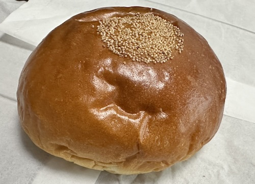

あんぱん - 2024/06/05 晴れ
皆さんは何パンが好きですか？
私はあんぱんが好きです。
ただ、あんぱんならなんでもいいわけではなくて、全体的にふんわりとした食感で、中のあんも甘すぎず、小豆にも拘って作っているやつが好きなんです。
以前は、サンエーコンベンションシティ店内にあったパン屋さんや、パルコシティのパン屋さんでも買えたんですが、今は別ものになっていて「これじゃない」のです。
しかし、見つけました。
ぜひ皆さんも、他のあんぱんと食べ比べを試して、あんぱん品質の違いを体験してみて下さい。
私はあんぱんが好きです。
ただ、あんぱんならなんでもいいわけではなくて、全体的にふんわりとした食感で、中のあんも甘すぎず、小豆にも拘って作っているやつが好きなんです。
以前は、サンエーコンベンションシティ店内にあったパン屋さんや、パルコシティのパン屋さんでも買えたんですが、今は別ものになっていて「これじゃない」のです。
しかし、見つけました。
パレット久茂地地下1階のパン屋さん「DONQ（ドンク）」。
これです。このあんぱんです。

家族にこのあんぱん愛を熱く語っても、誰も共感してくれないのでここに書いときます。ぜひ皆さんも、他のあんぱんと食べ比べを試して、あんぱん品質の違いを体験してみて下さい。